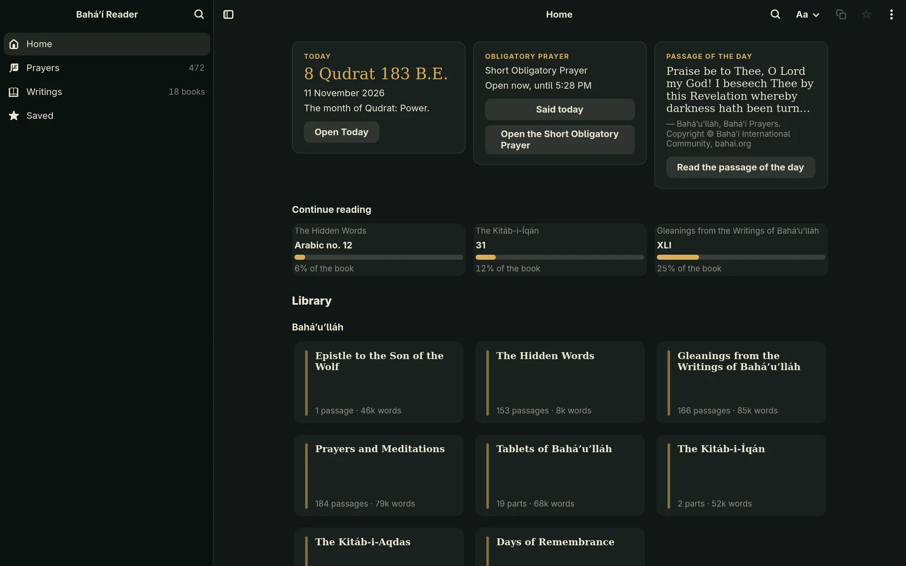
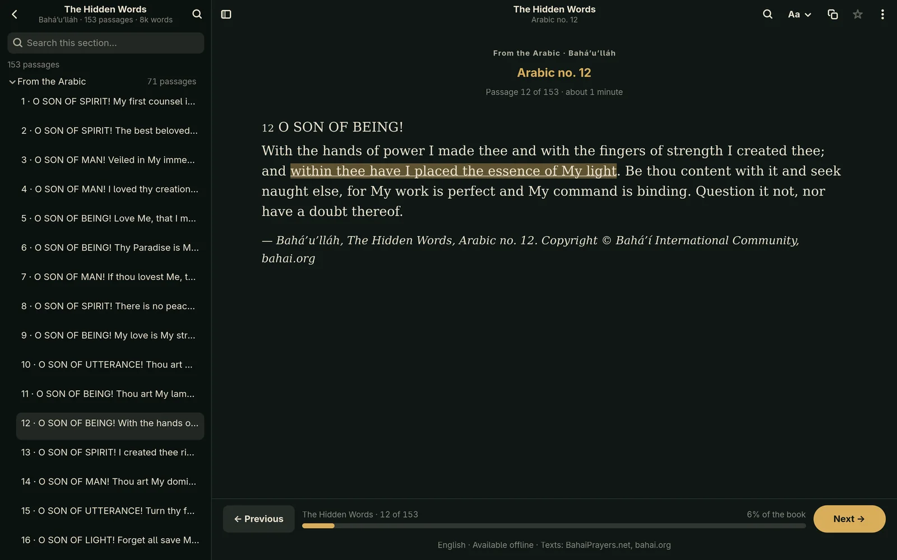
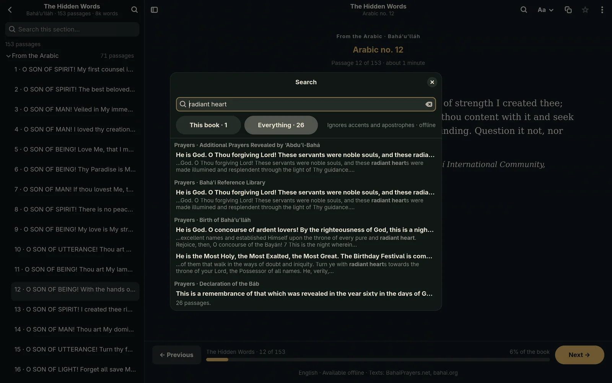
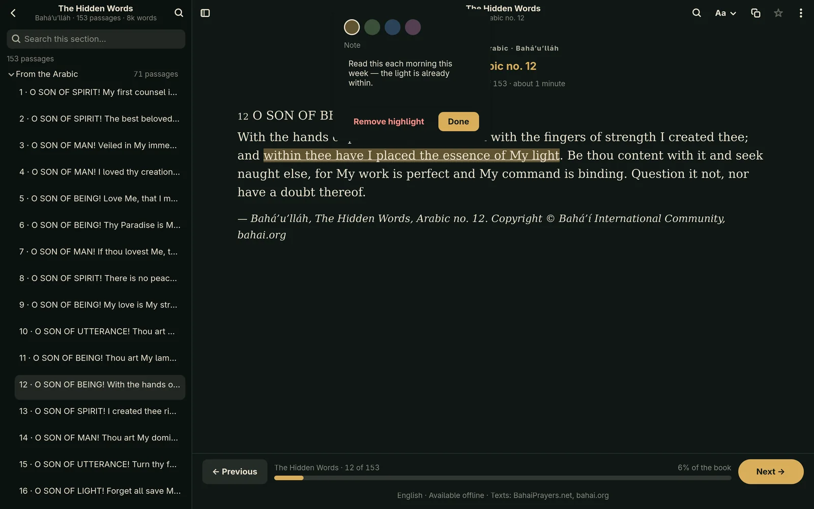
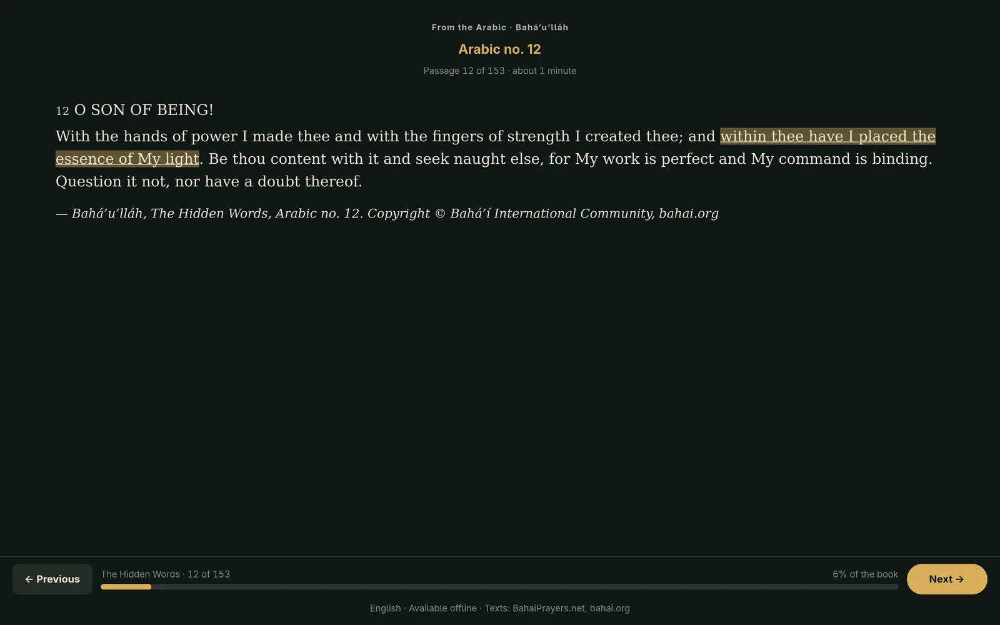
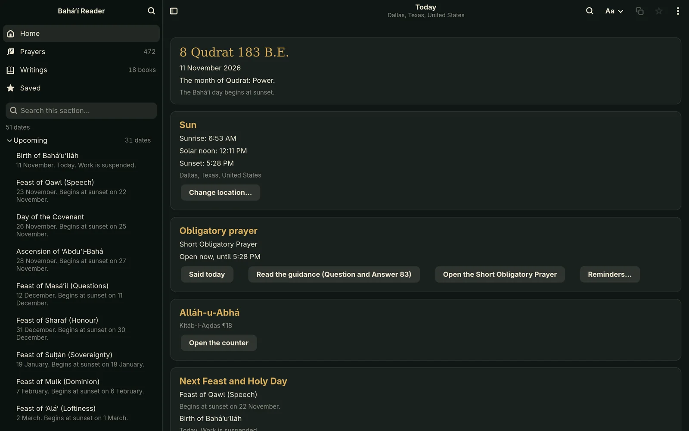
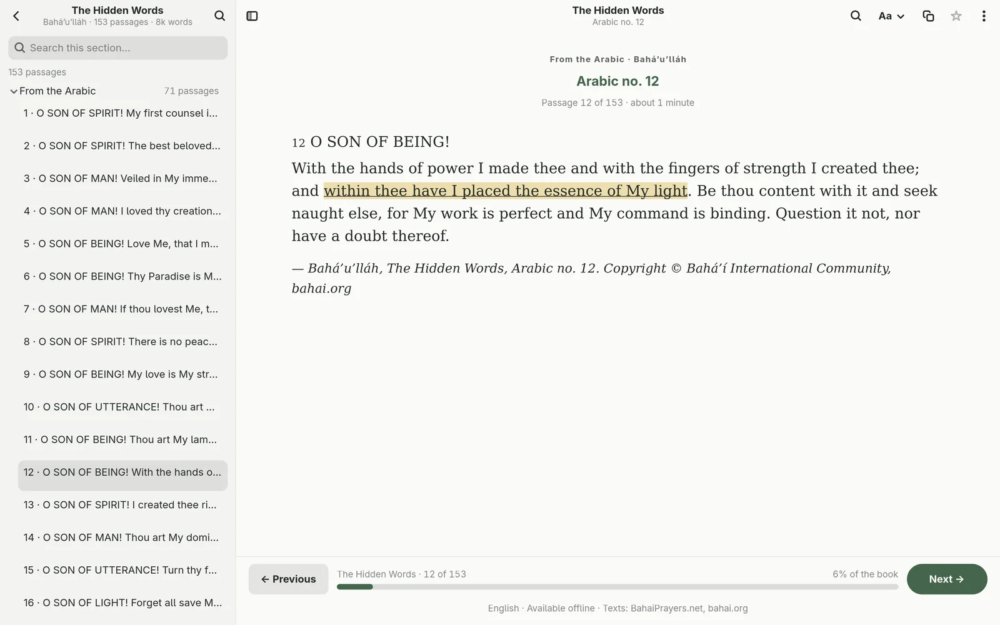

Prayer book
472 English prayers organized by topic. Search locally, see prayer lengths, and save passages to return to.
FOR OMARCHY & LINUX · v0.2.1
Prayers for every moment. Words to return to.
Your Bahá’í library, always within reach—even offline.
Free & open-source code. No account needed.

A SHORT TOUR · 1:25
Home, a book, Today, the obligatory prayers, search, highlights and focus mode, in the real 0.2.1 window. Narrated, with captions.
A LIBRARY, THOUGHTFULLY ARRANGED
Home shows the day at a glance and where you left off. Every book is a card, grouped by author. Open one and the sidebar becomes its contents.
472 English prayers organized by topic. Search locally, see prayer lengths, and save passages to return to.
The Arabic and Persian sections, each in its own place. Move from one passage to the next at your own pace.
Seventeen more books by Bahá’u’lláh, ‘Abdu’l‑Bahá, Shoghi Effendi and the Universal House of Justice, from Gleanings and the Kitáb-i-Íqán to God Passes By and the messages of the Universal House of Justice. Aqdas notes and references work offline, too.
Bahá’u’lláh
‘Abdu’l‑Bahá
Shoghi Effendi
The Universal House of Justice
NEW IN 0.2
On libadwaita 1.4 and newer, the app opens in a libadwaita window with Home, Prayers, Writings and Saved in the sidebar. Debian 12 keeps the classic window, with the same texts.

A BOOK
Open a book and the sidebar becomes its parts and passages, with Back to the library. Your place in the book sits under the text.

SEARCH · CTRL+K
One search over every prayer and writing, offline, without regard to case, accents or apostrophes. Results are grouped by book; Enter opens the passage at the match.

HIGHLIGHTS & NOTES
Select words for four highlight colours and a note. Saved → Highlights & notes lists them all. They stay in your settings, never in the texts.

FOCUS MODE · F11
F11 hides everything but the text. Press it again, or Escape, to come back.

TODAY · CTRL+T
The Badí‘ date, the sun’s times for your place, the obligatory prayer, the Alláh-u-Abhá counter, and the next Feast and Holy Day.

LIGHT, DARK, OMARCHY
Omarchy colours follow your active theme while the app is open. Elsewhere, choose light, dark or sepia.
TODAY, IN DETAIL
The Badí‘ date, from the Universal House of Justice’s tables. Sunrise, noon and sunset for a place you type in, worked out on your computer. The next Feast and Holy Day with their readings, your obligatory prayer’s time, the Fast and the passage of the day. An Alláh-u-Abhá counter. Optional reminders that survive restarts and suspend. Your location and records stay on your computer, and there are no streaks or scores.
YOUR WAY OF READING
Choose an installed font, adjust text size and spacing, and set comfortable margins. Resize the contents panel or hide it. Smooth scrolling makes longer prayers easier to follow.
A LANGUAGE TO RETURN TO
English is ready from the start. Choose another available language and download its collections. Your choice is remembered, and downloaded languages stay at the top of the picker.
Translation availability varies by book. The interface is in English.
TAKE THE LIBRARY WITH YOU
Version 0.2.1 · Native packages and AppImage use your system’s Python 3.11+ and GTK 4.8+ · The Flatpak brings its own
Debian 12+ · Ubuntu 24.04+
Download Debian package ↓sudo apt install ./bahai-reader_0.2.1-1_all.debFedora 43+ · compatible modern RPM systems
Download RPM package ↓sudo dnf install ./bahai-reader-0.2.1-1.noarch.rpmArch Linux · Omarchy · compatible derivatives
Download Arch package ↓sudo pacman -U ./bahai-reader-0.2.1-1-any.pkg.tar.zstx86_64 · Runs on your system’s Python 3.11+ and GTK 4.8+ · Debian 12+, Ubuntu 24.04+, Fedora 43+, Arch
Download AppImage ↓chmod +x bahai-reader-0.2.1-x86_64.AppImage
./bahai-reader-0.2.1-x86_64.AppImage./bahai-reader-0.2.1-x86_64.AppImage --install-desktop-entryOr let Gear Lever or AppImageLauncher add it and keep it updated.
x86_64 · Brings its own GTK · A direct download, not a Flathub listing; only the GNOME runtime comes from Flathub
Download Flatpak bundle ↓flatpak install --user ./bahai-reader-0.2.1-x86_64.flatpak
flatpak run org.bahai.ReaderYour package manager installs required dependencies. Then open Bahá’í Reader from your application menu. Verify download checksums.
App code is open source. Contributions, thoughtful suggestions, and bug reports are welcome.
Visit the project on GitHub ↗Texts and translations are provided by BahaiPrayers.net and retain their respective rights. In English, official texts come from the Bahá’í Reference Library, Copyright © Bahá’í International Community, bahai.org.